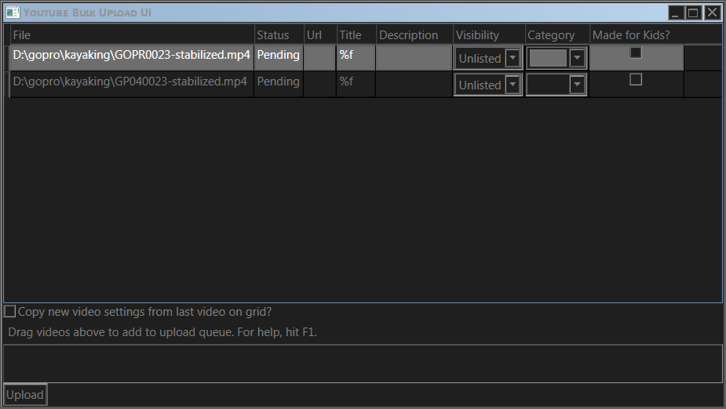

NB: As of 2021-05-02, the app is waiting for Google's API Audit to finish before being publicly usable. Please check again in a few days.
A simple tool for uploading multiple videos to your YouTube channel.
I needed something to help me upload my vacation videos and now I'm sharing it with you.
I also had the bad experience of paying for a similar application, which the developers later broke, then demanded I pay for the new version to continue using. Hopefully this will help others avoid this kind of inconvenience.
Requires .NET 4.6.1. Download the latest release from here: https://github.com/staafl/youtube-bulk-upload-ui/releases/latest
No installation needed. Start the application and you'll be prompted to provide access to your YouTube account in order to upload videos.
Afterwards, you can drag videos files to the main grid of the application and edit their details. When you're finished, just hit "Upload" and the app will do its job.
To remove videos from the grid, select the lines on the grid and hit "Delete".
The title and description fields support the following placeholders: %f - file name, %i - order of file on the grid, %c - total number of files on the grid (so having five videos with title "%f - part %i/%c" will upload them with titles like "my video - part 2/5")
Should work on MacOS or Linux with Mono.
Reading video EXIF tags to populate title and description automatically or with a pattern supplied by the user.
Export / import lists of videos to upload in CSV file format (e.g. for compatibility with Excel).
Resuming failed uploads.
Notify user when upload is complete.
Export list of video URLs on completion.
Integrate with ffmpeg for automatic stabilization etc.
This app doesn't and will not gather ANY data from the user.
This app's use of information received from Google APIs will adhere to the Google API Services User Data Policy, including the Limited Use requirements.
Download the code here: https://github.com/staafl/youtube-bulk-upload-ui
To build the project you'll need to provide your own client_secret.json from Google Cloud, since if I publish the client secret used in the binary, Google will likely revoke it. Protecting the client secret is also the reason why the published release is obfuscated. Just paste the JSON file in a static class ClientSecret with a string constant.
If this tool helps you, consider sending a small donation to a charity of your choice and dropping me a line. You'll totally make my day. You can also donate a few bucks through me, in which case 100% of your donation will be forwarded to a children or animal shelter.